長期トレンド
JKMとJEPXシステムプライスの推移グラフ
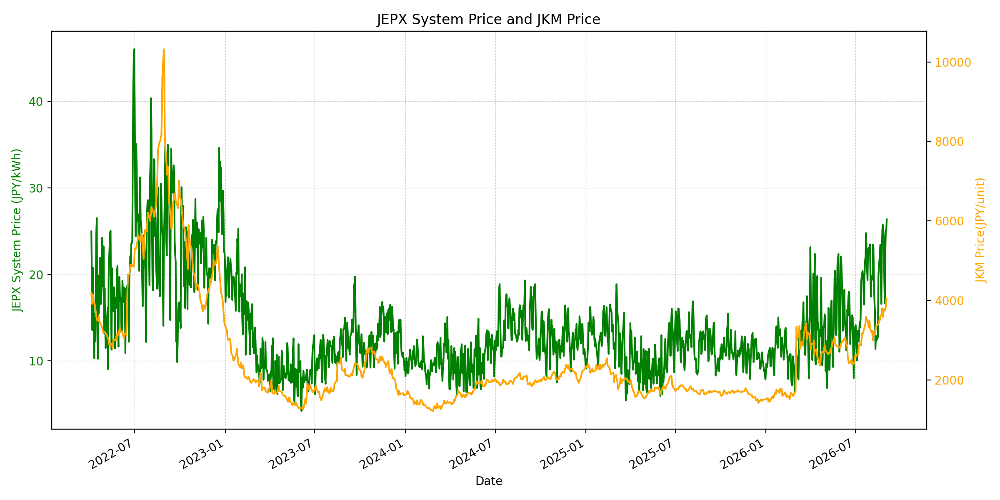
WTIの推移グラフ
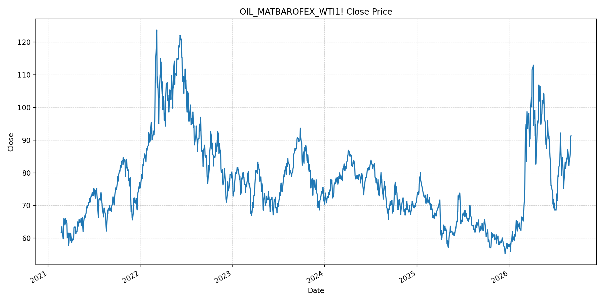
JEPXエリアプライスグラフ（直近一年分）
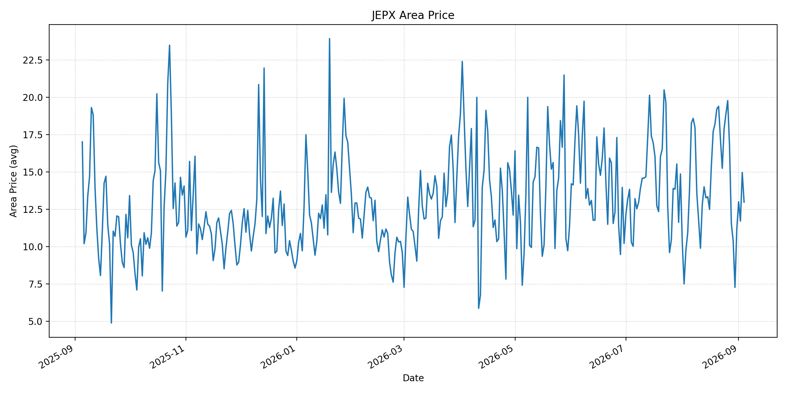
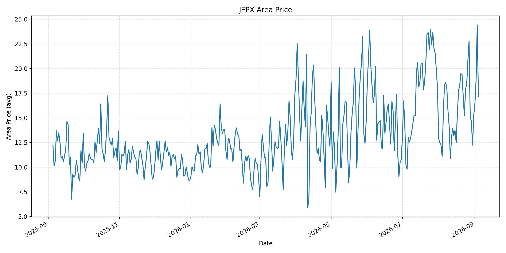
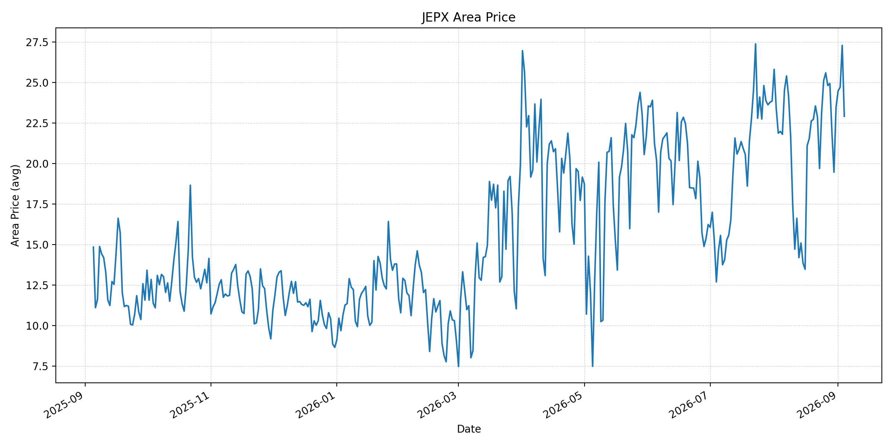
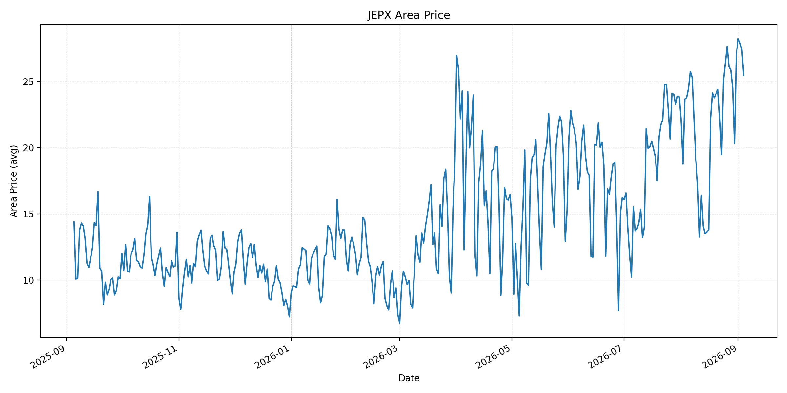
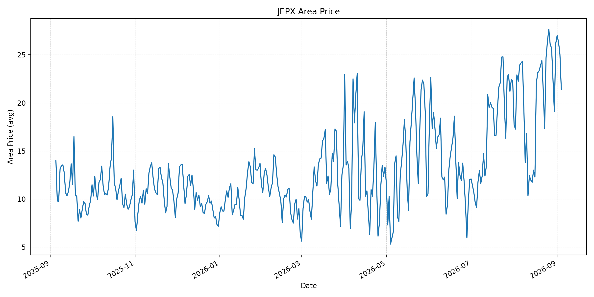
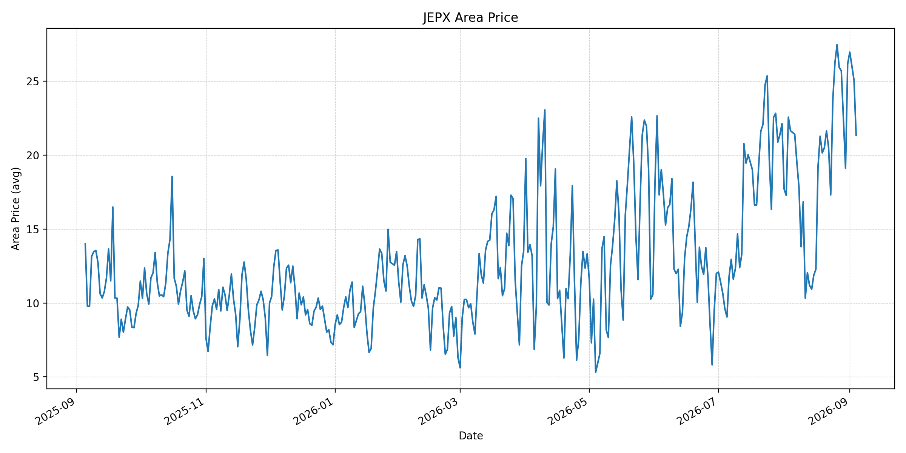
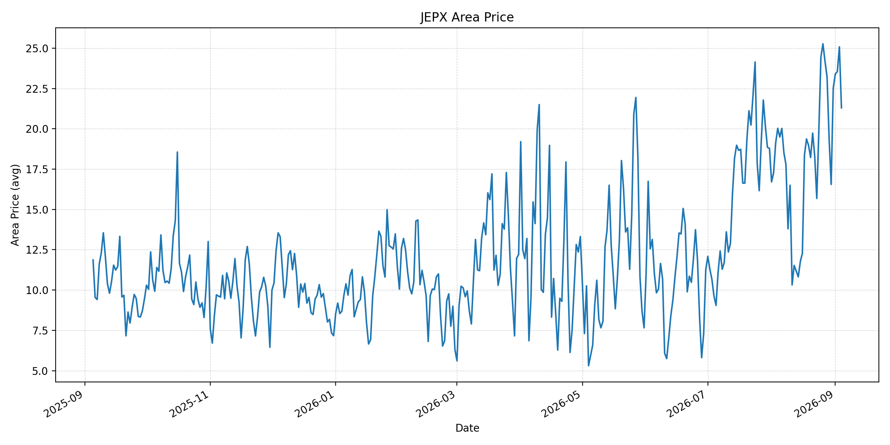
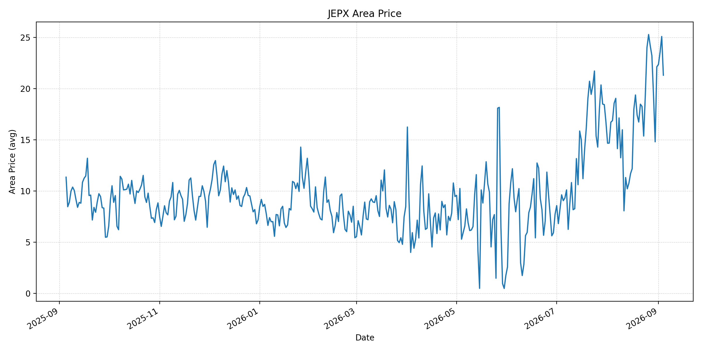
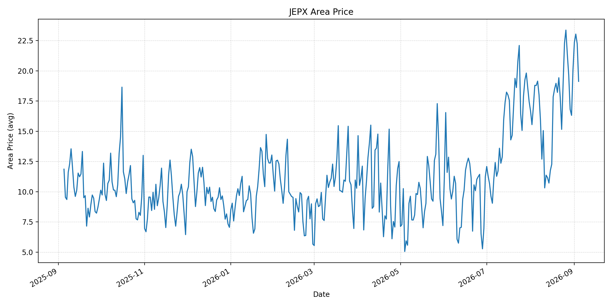
短期トレンド
JKMとJEPXシステムプライスの推移グラフ
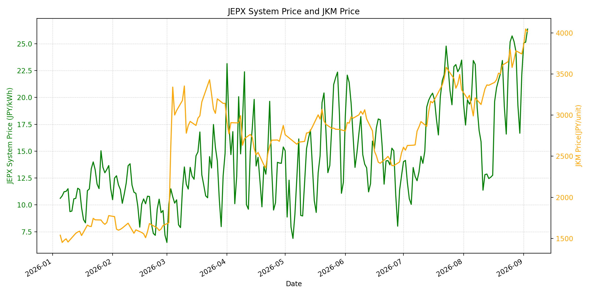
WTIの推移グラフ
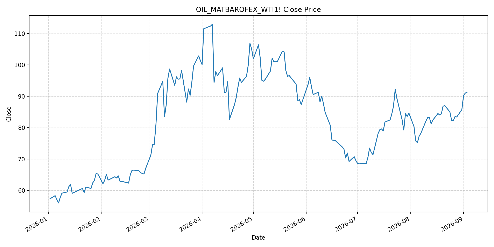
JEPXシステムプライス
最新値は 2026-09-04 分、先週終値は 2026-08-28、先月終値は 2026-08-31 時点の直近値です。
| エリア | 当日価格 | 前日価格 | 前日比（％） | 先週終値 | 先週比（％） | 先月終値 | 先月比（％） | 過去最高値 | 最高値比（％） |
|---|---|---|---|---|---|---|---|---|---|
| システム | 21.36 | 26.37 | -19.00 | 24.27 | -11.99 | 22.10 | -3.35 | 64.06 | -66.66 |
| 北海道 | 12.98 | 14.96 | -13.24 | 11.53 | 12.58 | 11.18 | 16.10 | 73.92 | -82.44 |
| 東北 | 17.15 | 24.43 | -29.80 | 15.13 | 13.35 | 15.25 | 12.46 | 84.92 | -79.80 |
| 東京 | 22.91 | 27.29 | -16.05 | 24.94 | -8.14 | 23.47 | -2.39 | 86.13 | -73.40 |
| 中部 | 25.45 | 27.41 | -7.15 | 25.86 | -1.59 | 27.01 | -5.78 | 52.06 | -51.12 |
| 北陸 | 21.41 | 25.08 | -14.63 | 25.72 | -16.76 | 26.18 | -18.22 | 46.48 | -53.94 |
| 関西 | 21.35 | 25.08 | -14.87 | 25.71 | -16.96 | 26.17 | -18.42 | 46.48 | -54.07 |
| 中国 | 21.30 | 25.08 | -15.07 | 23.21 | -8.23 | 22.51 | -5.38 | 46.48 | -54.18 |
| 四国 | 21.30 | 25.08 | -15.07 | 23.21 | -8.23 | 22.12 | -3.71 | 46.48 | -54.18 |
| 九州 | 19.13 | 22.23 | -13.95 | 19.65 | -2.65 | 20.06 | -4.64 | 40.54 | -52.82 |
LNG先物価格
最新値は 2026-09-03 の LNG(close) です。先週終値は 2026-08-27、先月終値は 2026-08-31 時点の直近値です。
| 当日価格 | 前日価格 | 前日比（％） | 先週終値 | 先週比（％） | 先月終値 | 先月比（％） | 過去最高値 | 最高値比（％） |
|---|---|---|---|---|---|---|---|---|
| 4015.00 | 4047.00 | -0.79 | 3674.00 | 9.28 | 3744.00 | 7.24 | 10319.00 | -61.09 |
石油先物価格
最新値は 2026-09-03 の OIL(close) です。先週終値は 2026-08-27、先月終値は 2026-08-31 時点の直近値です。
| 当日価格 | 前日価格 | 前日比（％） | 先週終値 | 先週比（％） | 先月終値 | 先月比（％） | 過去最高値 | 最高値比（％） |
|---|---|---|---|---|---|---|---|---|
| 91.30 | 91.01 | 0.32 | 83.53 | 9.30 | 85.76 | 6.46 | 123.70 | -26.19 |
ニュース
イラン情勢に関するニュース
- 9月3日、イランは米国の爆撃への報復としてクウェートを標的にしたと報じられ、米国は経済圧力と軍事行動を組み合わせる姿勢を強めています。参照: AP, 2026-09-03
- 軍事的緊張の再燃により、ホルムズ海峡の安全回復と航行再開を巡る交渉の不確実性が続いています。参照: AP, 2026-09-03
ホルムズ海峡経由の石油・LNGに関するニュース
- イランの許可制度と攻撃リスクにより、海峡通航は先週102隻で前週126隻を下回りました。戦前は1日130隻超の通航があったとされます。参照: AP, 2026-09-03
- 9月3日の商品船通航は6隻で、前日の11隻、10日平均の約13隻を下回りました。規制対象には原油・LNG・LPG船を含むと報じられています。参照: Reuters, 2026-09-03
ホルムズ海峡経由でない石油・LNGに関するニュース
- 9月3日に、ホルムズ海峡を経由しないLNG供給量を直接変更する主要な新規公表は確認できませんでした。
- イラクは8月の原油輸出を増やし、9月も増加が見込まれると報じられています。ただし、海峡の許可と輸送安全性に依存するため、安定供給の代替とは限りません。参照: Reuters, 2026-09-04
日本国内のイラン戦争に関係するニュース
- 過去24時間で、JEPX制度または国内電力需給ルールを直接変更する主要な新規公表は確認できませんでした。
- 日本は中東迂回パイプライン支援と調達先多様化を含む供給強靭化策を進める方針です。参照: Reuters, 2026-08-26
インサイト
ニュース事項による日本の電力市場への影響（短期：数日〜1週間）
- JEPXシステムは 21.36 円/kWhで前日比 -19.00%、先週比 -11.99% です。全エリアで前日を下回り、特に東北は -29.80%、東京は -16.05% となりました。
- LNGは 4015.00 で前日比 -0.79% ですが、先週比 9.28%、WTIは 91.30 ドルで先週比 9.30% です。燃料市況の上振れリスクは、国内スポット価格の一日下落だけでは解消していません。
- 数日から1週間では、通航実績、イランの許可制度、船舶安全事案、追加の軍事行動を日次で確認する必要があります。JEPXは燃料要因に加え、気温・需要・連系制約で変動します。
ニュース事項による日本の電力市場への影響（長期：1ヶ月〜半年）
- システム価格は先月比 -3.35% ですが、LNGは 7.24%、WTIは 6.46% 上昇しています。燃料高が持続すれば、火力の限界費用を通じて卸電力価格に波及する可能性があります。
- 北海道は先月比 16.10%、東北 12.46% と上昇する一方、関西は -18.42% です。エリア別の需給差と燃料価格を分けて監視する必要があります。
- 調達多様化や迂回インフラは供給途絶への耐性を高め得ますが、海峡の安全な通航回復が物流コスト低下の前提です。短期のリスクプレミアムと長期の供給制約を分けて評価します。